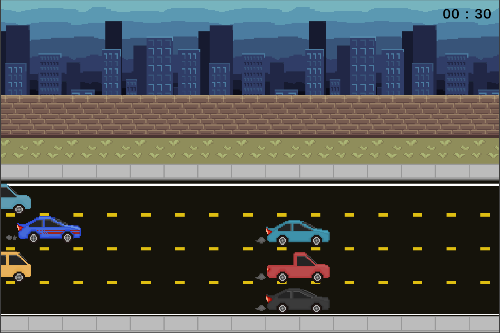

Created: 12/13/23
Tags:
I think this class was an amazing learning experience for me. During my time developing
two different games within this class, I was able to learn way more about Ienumerators
along with finding out how to transfer data between scenes more efficiently. I also learned
some new built-in functions and the best way to use them.
The final presentations for my group went amazingly as we all had put a lot of effort into
the game making it one of the hottest ticket items within the presentation. We got a lot of
good feedback praising the game and ideas for how to improve.
The class materials and reads on game design were helpful and knowledgeable. There were some pockets of information I had already learned before this, but that is mostly because I am at a senior-level education taking beginner-level classes. The most interesting topic I did learn from this class was DMA and all the data behind making a good video game.
I think the course as a whole was laid out very well with the learning about game design being in the start and the transition to actually practicing game design in the later half. The only thing I wish for would be a point in time in the class where the programmers got taught some of the basics of coding in Unity.